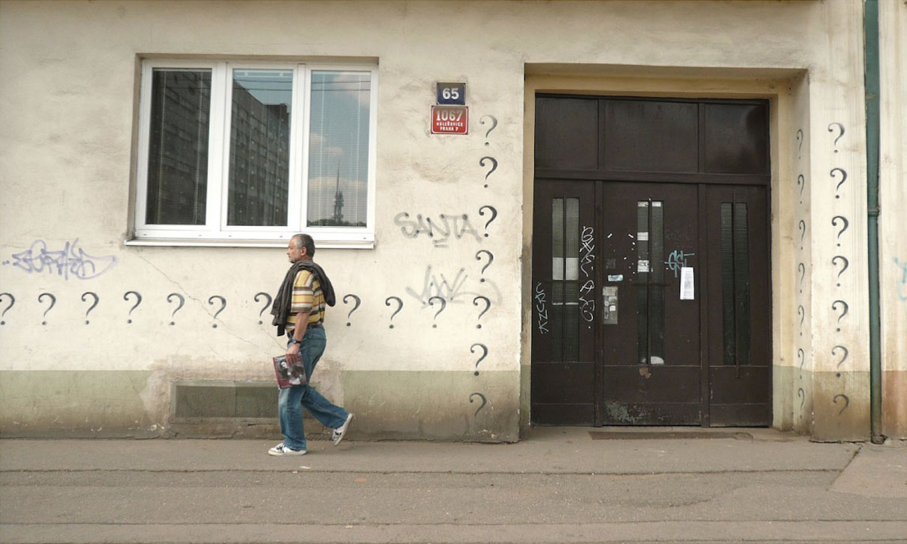

Imagine a city as an imprint of human minds into a landscape. Each human artefact existed once solely in the mind of a single person. So whenever you look around in a populated area, you find yourself in the middle of a materialised collective mental landscape.
Somehow, there is everything we usually think about: ambitions, fears, desires, escapes etc. From a certain perspective, cityscape renders all these things tangible and visible. You can walk through and around them, observe, discover places you lost access to in your mind. Like in a dream. Try it out. It's a great game particularly on holidays when your mind is less bound by duties.

Choose a starting point and from there on give up on maps, apps, guides, anything that tends to separate you from your surroundings, anything that explains and interprets.
It is good to set your time. An hour, two, three... It really is up to you.
The only devices recommended during the journey are a tracking system, a camera and an alarm clock. You may also prefer a notebook and a pen.
- Set off in any direction that seems to be most appealing. Or just any direction with no reason at all.
- Ease off your mind. Don't push, don't pull, don't expect.
- Go.
- Walk around. Care not where you are. Just observe.
- Take notes of whatever catches your attention.
- Don't talk. Important! If you are sharing the walk with someone, verbalise and exchange all your feelings only when it is over.
- Stop any time you feel like having enough, or when the alarm clock goes off.
- Wake up into your usual mode by finding out where you are.
- Analyse your journey as if it were a dream.
Find out about places that have raised your emotions. Put it all together. Let it live in you and develop for as much time as necessary. It can be years and you can do it anywhere. However, a great place to start with it is Prague for mainly two reasons: it is safe to walk just about anywhere, there are no no go zones, and it is very shapely and diverse.
Wander and wonder.
Harvest. Sieve. Weave.
Questions or thoughts?
Let's talk about it.